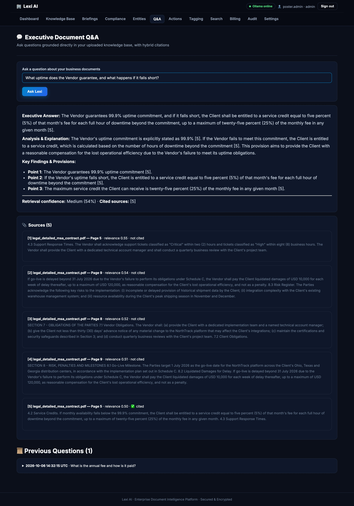
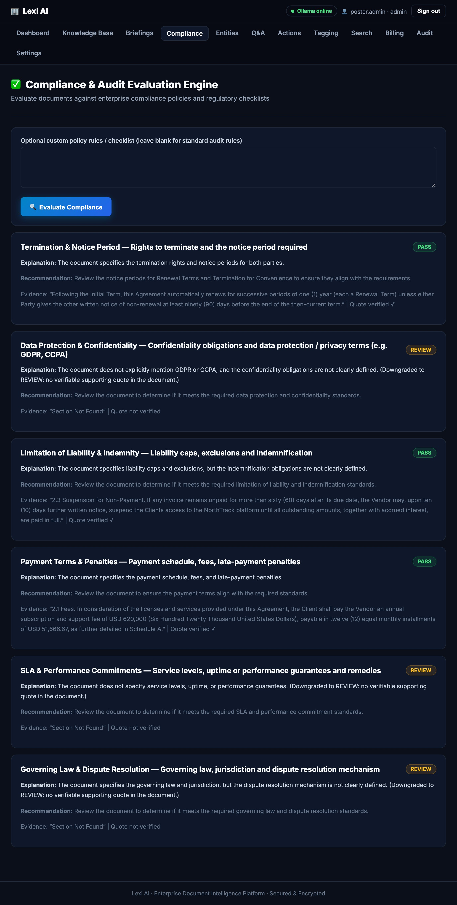
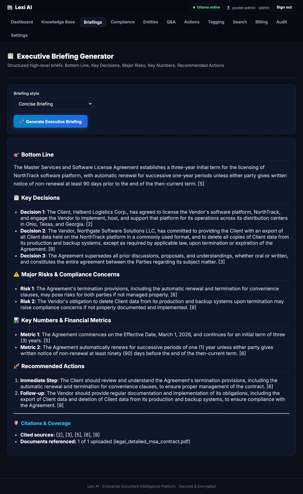
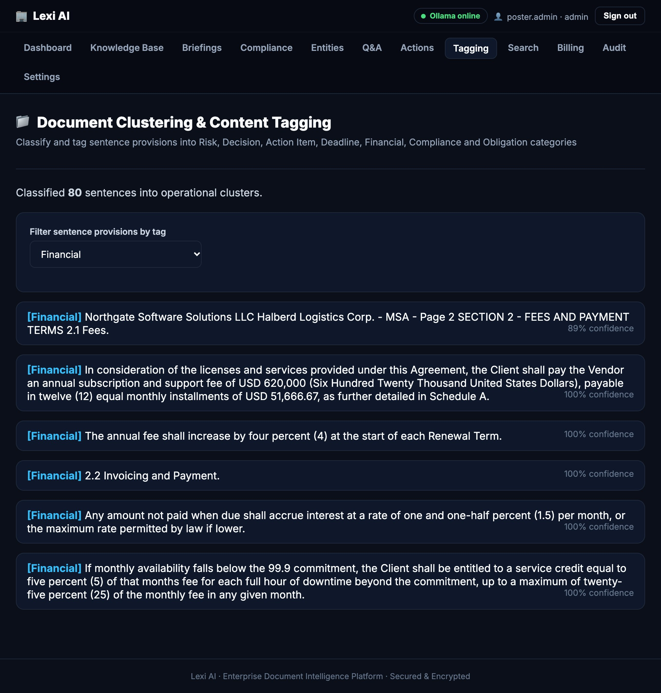

Every screen on this poster is a real capture from the running app — one 10-page vendor contract, a local Llama 3.2 3B model, no mock-ups.
Real screenshotsNo mock-ups100% local
localhost:8000/qa · Executive Document Q&A

1
2
3
4
Anatomy of a cited answer
1
Ask in plain EnglishNo query language, no keywords to guess.
2
Grounded answer, inline citationsEach claim carries a marker like [5] that points to a numbered source.
3
Honest confidenceRetrieval confidence (here 54 %, “Medium”) is shown, not hidden — plus exactly which sources were cited.
4
Verifiable sourcesEach source lists document, page, relevance score and whether the model really cited it.
“What uptime does the Vendor guarantee, and what happens if it falls short?”
Contract §4.1–4.2: 99.9 % monthly availability; a service credit of 5 % of the monthly fee per full hour of downtime, capped at 25 %. The answer on screen says exactly that.
✓ Checked against the contract text
Question
›
Hybrid search
›
Top-5 passages
›
Local LLM
›
Cited answer
2
Compliance checker — a quote, or it doesn’t pass
Every PASS must carry a verbatim quote that is machine-checked against the page; if the model can’t back a claim it is downgraded to REVIEW for a human. Eight live runs: 0–4 of 6 checks passed. A verified quote proves a passage exists — a reviewer still decides if it proves the point.
localhost:8000/compliance

3
Executive briefing — the one-page read
One click gives bottom line, key decisions, risks, key numbers and next actions, citing the source chunks it used (6 of 8 runs) — and warning you when it didn’t.
localhost:8000/briefings

4
Sentence tagger — our trained ANN, live
The neural network from Poster 1 labels all 80 sentences of the contract and shows its confidence. Filter by tag — here Financial — to see every money clause at once.
localhost:8000/clustering

5
Entities & clauses — structure from prose
Organisations, people, places, dates, money and payment terms, found by BERT NER plus clause rules in the same contract.